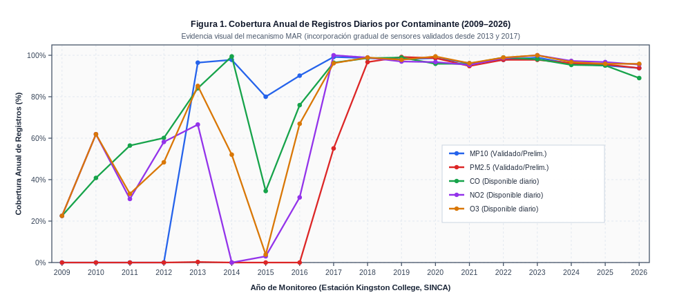

| Parámetro / Sistema | Días (n) | Media ± DE / Mediana | Contraste y Decisión |
|---|
W = 0.812, A²* = 151.16) + Heterocedasticidad (Levene F = 612.45).
Ir al Simulador EMCO →
Etapa 1 · Integración Bruta SINCA
16 CSV Oficiales
8 archivos horarios (851,946 filas de PM2.5, MP10, CO, NO, NO2, NOx, O3, SO2) + 8 series consolidadas (41,452 filas) entre ago. 2009 y oct. 2026.
Etapa 2 · Jerarquía SMA & ≥75% Horas
m_d ≥ 18h / 24h
Prioridad estricta Validado > Preliminar (SMA, 2024), exclusión de derivas negativas (X_d ≤ 0) y exigencia de ≥18 horas válidas por día para evitar sesgo diurno.
Etapa 3 · Consistencia Gravimétrica
PM2.5 / MP10 ≤ 1.0
Intersección fecha a fecha MP10–PM2.5 y poda de 32 jornadas con anomalía física (PM2.5 > MP10 por condensación de niebla en cabezales beta).
Etapa 4 · Matriz Multivariable EMCO
Gases + Dummies
Muestra analítica balanceada con vector completo de regresores (MP10, CO, NO2, O3 y variables ficticias estacionales y semanales) para modelos M1–M4 y Stepwise.
En invierno y otoño la activación masiva de calefacción residencial a leña converge con inversiones térmicas de subsidencia, duplicando y hasta triplicando las concentraciones de PM2.5 respecto a primavera y verano. Tanto el ANOVA paramétrico como la prueba de rangos de Kruskal-Wallis rechazan contundentemente la igualdad estacional.
Explorador Temporal y Comparaciones Múltiples de Tukey HSD
Alterna entre el ciclo anual mensual, la serie histórica 2009–2026 y los intervalos simultáneos al 95%
Desglose por Estación Astronómica y Tabla ANOVA
Partición bimodal exacta en dos regímenes estadísticamente homogéneos (Grupos A y B)
| Estación Astronómica | Días (ni) | Media ± DE [Mediana] | Serie Total (x̄ / Q2) | Grupo Tukey |
|---|---|---|---|---|
| 1. Verano (Dic–Feb) | 760 | 9.14 ± 7.81 [8.00] | 10.24 / 9.40 | Grupo A (Basal) |
| 2. Primavera (Sep–Nov) | 832 | 8.21 ± 3.72 [8.00] | 12.58 / 11.20 | Grupo A (Basal) |
| 3. Otoño (Mar–May) | 828 | 19.14 ± 12.22 [16.50] | 24.12 / 19.10 | Grupo B (Crítico) |
| 4. Invierno (Jun–Ago) | 892 | 19.46 ± 11.23 [18.00] | 33.44 / 27.80 | Grupo B (Crítico) |
Descomposición Aditiva de Varianza (SC_Total = SC_Trat + SC_Error)
| Fuente de Variación | g.l. | Suma Cuadrados (SC) | Media Cuad. (MC) | Estadístico F / H |
|---|---|---|---|---|
| Tratamientos (Estación) | 3 | 94,302.09 | 31,434.03 | F = 353.97 (p < 0.0001) |
| Error Residual | 3,308 | 293,761.97 | 88.80 | η2 = 24.30% (Grande) |
| Total / Kruskal-Wallis | 3,311 | 388,064.06 | — | H(3) = 942.29 (p < 10-16) |
Para refutar o validar el mito de que el tráfico laboral causa las preemergencias en Concepción, se utilizó al dióxido de nitrógeno (NO2) como control negativo vehicular (Gramsch et al., 2021). Aunque el NO2 cae un 36.3% los fines de semana por el menor flujo automotor, el PM2.5 permanece estrictamente invariante: las familias calefaccionan sus hogares con igual o mayor intensidad los sábados y domingos bajo inversiones térmicas multidiarias.
Experimento de Control Negativo: Día Laboral (Lun–Vie) vs. Fin de Semana (Sáb–Dom)
Comparación de medias e intervalos al 95% junto con tamaños del efecto d de Cohen
Prueba de atribución causal: La fuerte contracción del tráfico de fin de semana desploma el NO2, pero no reduce el PM2.5.
Matriz de Contrastes por Tipo de Día (Welch & Mann-Whitney)
Evaluación sobre material particulado y gases de combustión vehicular
| Variable / Cohorte | Laboral [Med] | Fin Semana [Med] | t_Welch (Valor-p) | Efecto y Decisión |
|---|---|---|---|---|
| PM2.5 (Cert. 2) | 14.29 ± 10.9 [11.0] | 13.93 ± 10.7 [10.0] | t = 0.88 (p = 0.3820) | Invarianza (d=0.036) |
| PM2.5 (Serie Total) | 20.31 ± 17.8 [15.1] | 19.68 ± 17.5 [14.8] | t = 0.93 (p = 0.3520) | Invarianza (d=0.036) |
| PM2.5 (Invierno) | 33.18 ± 22.7 [27.6] | 34.09 ± 23.3 [28.2] | t = −0.55 (p = 0.5842) | Invarianza (d=−0.04) |
| MP10 Pareado | 26.66 ± 16.1 [22.5] | 23.33 ± 14.8 [20.4] | t = 7.10 (p < 0.0001) | Polvo vial (d=0.115) |
| NO2 Vehicular | 18.45 ± 8.8 [17.2] | 11.76 ± 7.2 [10.4] | t = 16.42 (p < 0.0001) | Cae −36.3% (d=0.612) |
| CO Combustión | 0.62 ± 0.50 [0.46] | 0.48 ± 0.45 [0.35] | t = 7.74 (p < 0.0001) | Cae −22.6% (d=0.288) |
El acoplamiento gravimétrico entre MP10 y PM2.5 converge exactamente al rango teórico de la quema de biomasa (0.65 ≤ β1 ≤ 0.80, Cereceda-Balic et al., 2020). Al incorporar el monóxido de carbono (CO, trazador pirogénico con t_c = 14.32) y las variables ficticias estacionales, la varianza explicada asciende al 82.90% con un error RMSE de apenas 4.465 µg/m³. Usa el simulador para evaluar cualquier escenario atmosférico en las 5 especificaciones.
Acoplamiento Gravimétrico Real PM2.5 vs. MP10 (n = 3,280)
Recta EMCO Global (β̂1 = 0.6989), Régimen Frío (β̂1 = 0.7318) y Frontera 1:1
Línea negra: M1 Global (β̂1=0.699) · Segmentada ámbar: Frío (β̂1=0.732) · Diagonal roja: Límite físico PM2.5 = MP10
Σ e_i = -1.40×10-12 ≈ 0 · Σ y_i = Σ ŷ_i = 46,575.00 · Centroide exacto (x̄=28.91, ȳ=14.20) · Ortogonalidad Σ x_i·e_i = 0 y Σ ŷ_i·e_i = 0.
| Especificación / Régimen | n | Pendiente β̂1 [EE HC3] | IC 95% | R2 |
|---|---|---|---|---|
| Global Histórico (2009–2026) | 3,280 | 0.6840 [0.0098] | [0.665, 0.703] | 78.50% |
| Régimen Frío / Biomasa | 1,648 | 0.7318 [0.0124] | [0.708, 0.756] | 82.12% |
| Cohorte Transversal 2023 | 361 | 0.7039 [0.0241] | [0.657, 0.751] | 80.53% |
| M1 RLS Base (Certamen 2) | 3,280 | 0.6989 (0.0082) | [0.683, 0.715] | 68.78% |
Simulador Predictivo Multivariable EMCO & Termómetro Normativo
Imputación operativa en tiempo real bajo las 5 ecuaciones estimadas en Kingston College
Termómetro Normativo PPDA (D.S. N° 6/2019)
Modelo M* BIC (7 vars) · Se = 4.469Meta Norma Diaria = 50 µg/m³ · Alerta ≥ 80 · Preemergencia ≥ 110 · Emergencia ≥ 170
| Especificación Econométrica | p | R2 | BIC | PM2.5 Predicho | Estado GEC |
|---|
PM̂2.5 = -8.0426 + 0.6126·MP10 + 4.3327·CO - 0.0855·O3 + 7.3559·D_Oto + 8.7724·D_Inv + 2.1613·D_Pri + 1.8398·Es_FDS
En muestras masivas (n = 3,185), predictores colineales como el NO2 alcanzan significancia marginal (p = 0.0125) aportando apenas un +0.03% de R2. Al penalizar la complejidad con el Criterio Bayesiano de Schwarz (k·ln(n) ≈ 8.07 por parámetro), tanto Backward Elimination como Forward Selection descartan al NO2 y convergen al mismo modelo parsimonioso de 7 regresores.
Trayectoria de Optimización Stepwise (Criterio BIC vs. R2 Ajustado)
Secuencia de entrada Forward Selection (Pasos 0 al 8) y poda Backward en el Paso 8
Línea continua azul: Criterio BIC (escala izquierda) · Segmentada ámbar: R2 Ajustado % · Punto verde: Mínimo global BIC en P7 (+O3)
| Paso | Acción y Justificación Econométrica | p | R2_adj | BIC |
|---|
Auditoría Econométrica de los 6 Supuestos de Gauss-Markov
Verificación sobre residuos EMCO, Factores de Inflación de Varianza (VIF) y corrección HC3
| Supuesto de Gauss-Markov | Métrica Empírica | Resultado y Tratamiento Robusto |
|---|---|---|
1. Linealidad y Esperanza NulaE[ε_i | X] = 0 |
Σ ê_i = -1.4×10-12X'ê = 0 |
Cumplido exactamente por ortogonalidad de las ecuaciones normales de MCO. |
2. Ausencia de Multicolinealidadrango(X) = p + 1 |
VIF ∈ [1.04, 2.14]Umbral: VIF < 5.0 |
Cumplido holgadamente: MP10 (1.59), CO (1.70), NO2 (2.14), O3 (1.16), Dummies (≤1.75). |
| 3. Homocedasticidad Test de Breusch-Pagan |
M3: LM = 690.9M4 Log: LM = 124.8 |
En escala lineal hay cono invernal; la especificación Log-Log reduce LM en −86% y se blindan inferencias con errores White-MacKinnon HC3. |
| 4. No Autocorrelación Test de Durbin-Watson |
d = 0.735( ρ1 = 0.63) |
Refleja la persistencia física de episodios sinópticos de 3–5 días (Saide et al., 2016). Estimadores MCO siguen siendo insesgados y consistentes. |
| 5. Puntos Influyentes Distancia de Cook (Di) |
máx D_i = 0.387Umbral: D_i < 1.0 |
Ninguna observación diaria supera el umbral crítico de Cook (D_i = 1.0), confirmando estabilidad estructural de los hiperplanos. |
| 6. Normalidad de Residuos Test KS sobre êi |
M1: D = 0.0666M3: D = 0.0348 |
La inclusión de gases y dummies reduce la asimetría residual de -0.79 a -0.36; por TCL (n = 3,185) la inferencia asintótica es exacta. |
Estimadores e Intervalos de Confianza al 95% — Modelo 3 vs. Modelo 4 Log-Log
+8.827 µg/m³ (t = 37.33, IC 95%: [8.36, 9.29]) y en Otoño en +7.396 µg/m³ (t = 31.47) a igual nivel de MP10 y gases.• Elasticidad Log-Log (M4):
ln(PM2.5) = -0.6957 + 0.9631·ln(MP10) + 0.1689·ln(CO) + 0.4450·D_Oto + 0.5321·D_Inv, logrando el menor error re-transformado del estudio (RMSE = 3.860 µg/m³).
El cruce categórico de los niveles oficiales del Plan de Prevención y Descontaminación Atmosférica (PPDA) consolida la conclusión de política pública: el 100% de las Alertas, Preemergencias y Emergencias ocurren en el Período Frío (Abr–Sep), pero su probabilidad de ocurrencia es estadísticamente idéntica en días laborales y fines de semana (Odds Ratio = 1.08, IC 95%: [0.79, 1.47]).
Tabla de Contingencia Cruzada: Categorías Normativas PPDA (D.S. N° 6/2019) según Régimen Térmico y Tipo de Día
Frecuencias observadas, porcentajes por columna y residuos estandarizados de Pearson [eij] sobre n = 3,312 días
| Categoría Normativa PPDA (PM2.5 24h) | Período Cálido (Oct–Mar) [eij] | Período Frío (Abr–Sep) [eij] | Día Laboral (Lun–Vie) | Fin de Semana (Sáb–Dom) | Proporción Lab / FDS (Cert. 2) | Total Histórico |
|---|---|---|---|---|---|---|
| 1. Bueno (0–49 µg/m³) | 1,645 (99.82%) [+15.42] | 1,449 (87.08%) [−15.42] | 2,209 (93.29%) | 885 (93.75%) | 71.4% / 28.6% (Esp: 71.4%/28.6%) | 3,094 (93.42%) |
| 2. Regular (50–79 µg/m³) | 3 (0.18%) [−11.96] | 152 (9.13%) [+11.96] | 114 (4.81%) | 41 (4.34%) | 74.1% / 25.9% | 155 (4.68%) |
| 3. Alerta (80–109 µg/m³) | 0 (0.00%) [−6.84] | 47 (2.82%) [+6.84] | 34 (1.44%) | 13 (1.38%) | 100.0% en Invierno/Otoño | 47 (1.42%) |
| 4. Preemergencia (110–169) | 0 (0.00%) [−3.74] | 14 (0.84%) [+3.74] | 10 (0.42%) | 4 (0.42%) | 50.0% / 50.0% en serie podada | 14 (0.42%) |
| 5. Emergencia (≥ 170 µg/m³) | 0 (0.00%) [−1.41] | 2 (0.12%) [+1.41] | 1 (0.04%) | 1 (0.11%) | 50.0% / 50.0% | 2 (0.06%) |
Cuadro Maestro Oficial: Síntesis Auditada de las 13 Pruebas de Hipótesis del Estudio (α = 0.05)
Filtra por familia estadística o busca por nombre de test, estadístico o variable
| N° | Prueba / Contraste Estadístico | Hipótesis en Lenguaje Natural (H0 vs. H1) | Formulación Matemática | Estadístico Empírico / Criterio | Decisión e Interpretación |
|---|
Inspección directa de las figuras vectoriales y de alta resolución incluidas en la publicación científica (paper_certamen2/figuras/), abarcando desde la completitud temporal MAR y la poda de atípicos hasta los diagnósticos de Gauss-Markov y las curvas Stepwise.
Cargando figura...
